A 3D arcade off-road racer in the browser.
Four trucks, eight tracks, jumps, mud, water and nitros.
PLAY NOW
Four trucks, eight tracks, jumps, mud, water and nitros.
THE TRAILER
SCREENS

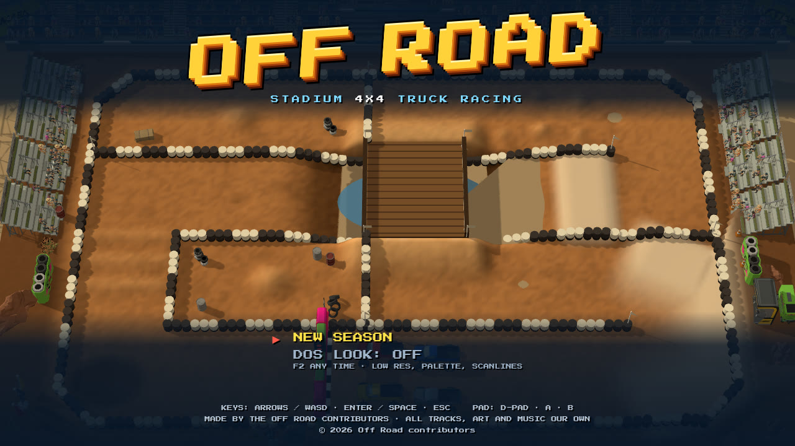

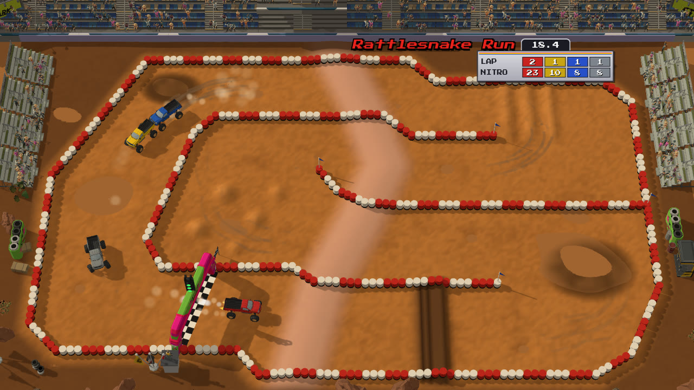

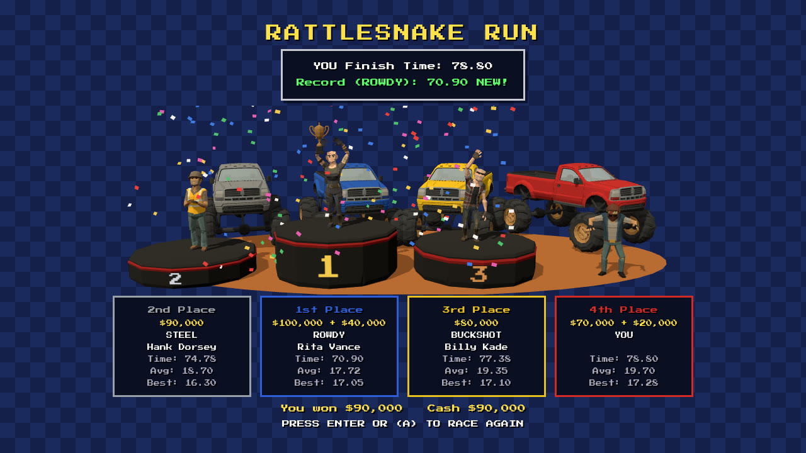

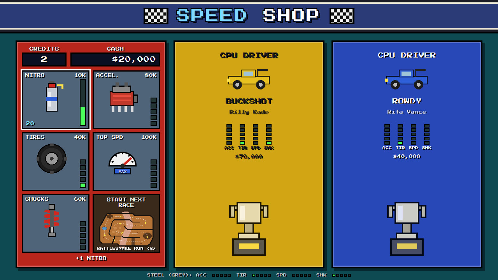

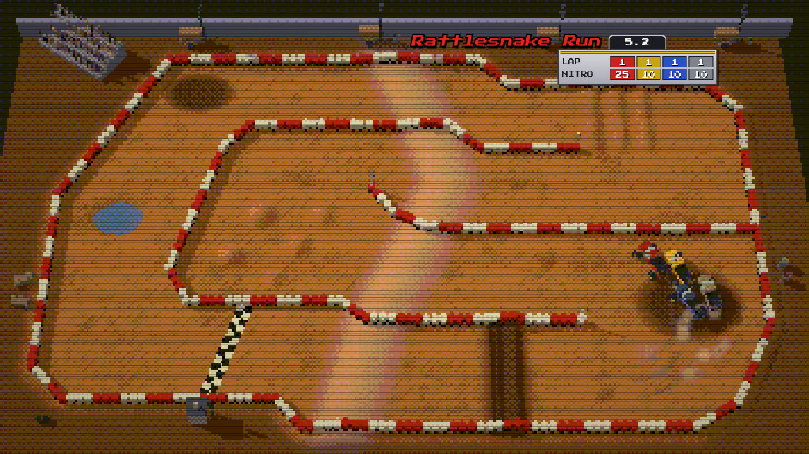

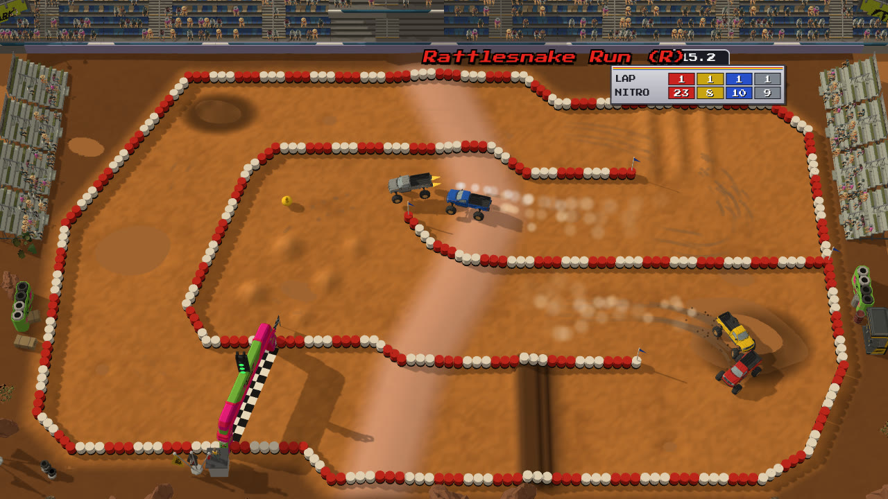
EIGHT TRACKS, FORWARD AND REVERSED


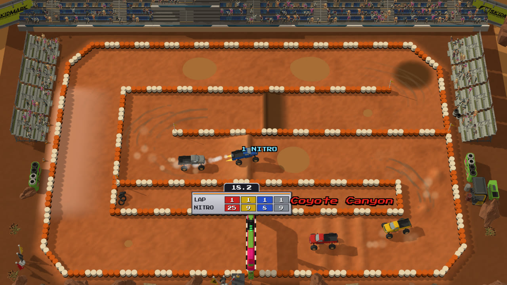

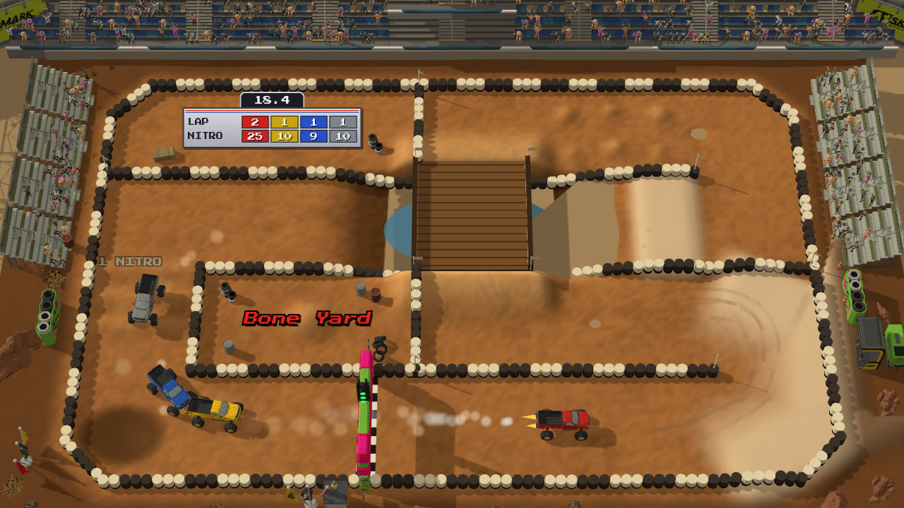

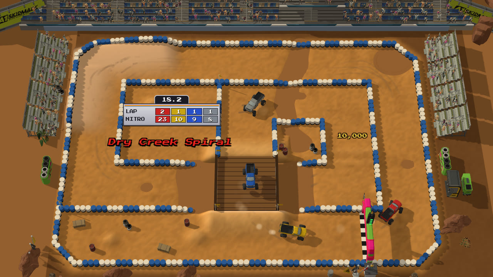

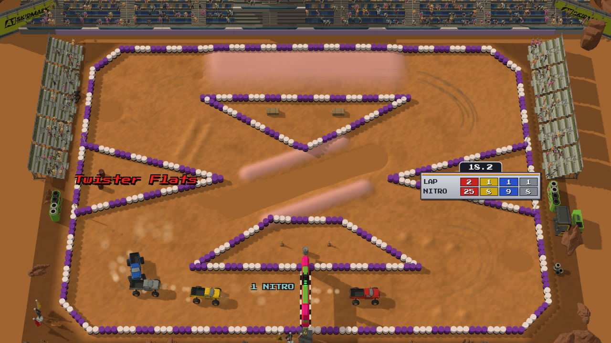

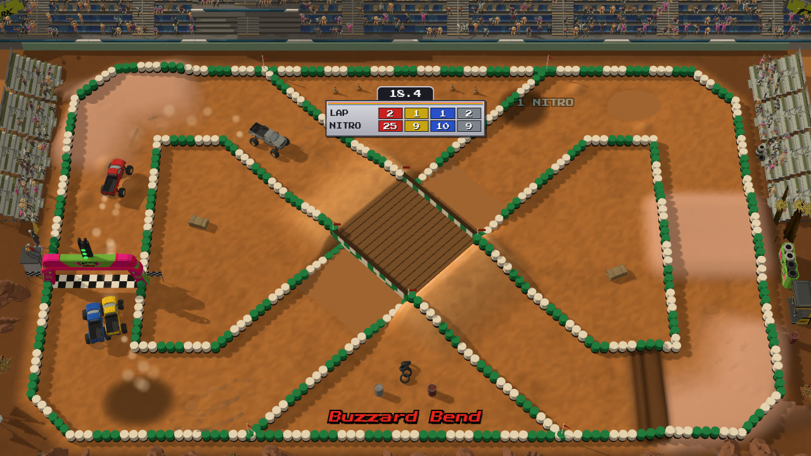

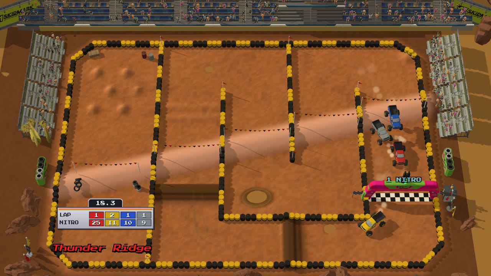

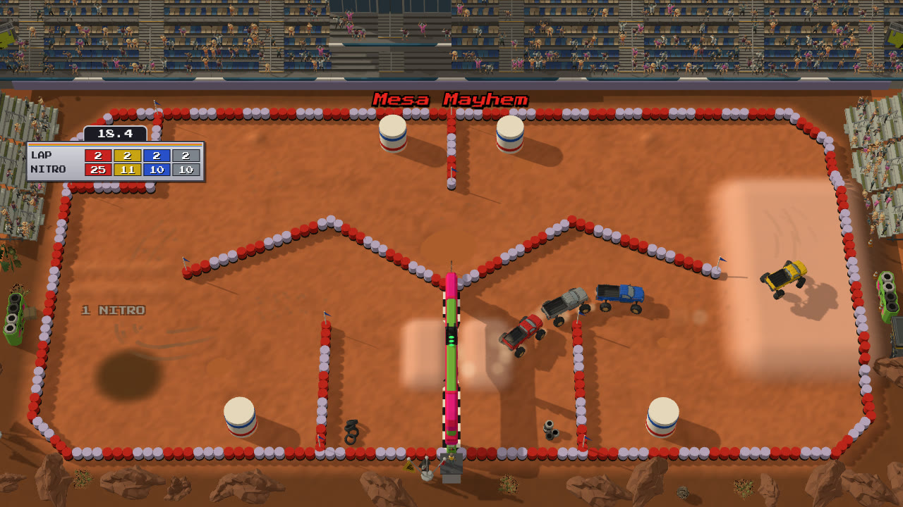